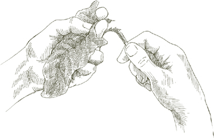
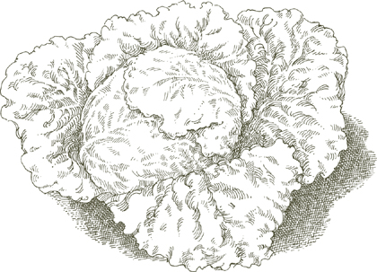

Салатный курс  Буквальное значение итальянского слова для салата — un’insalata — это «то, к чему добавлена соль», но это слово также имеет популярное метафорическое использование, применяемое с пренебрежением, когда описывают, например, интерьер или набор мыслей, которые кажутся довольно запутанными. Затем есть L’insalata, которое конкретно относится к салатному курсу, курсу с четко определенной ролью в классической последовательности итальянского обеда. L’insalata подается неизменно после второго блюда, чтобы сигнализировать о приближающемся конце трапезы. Он освобождает небо от захвата кулинарных изысков, ведя его к прохладным, свежим ощущениям, к переосмыслению пищи в ее наименее искусственном состоянии.
Буквальное значение итальянского слова для салата — un’insalata — это «то, к чему добавлена соль», но это слово также имеет популярное метафорическое использование, применяемое с пренебрежением, когда описывают, например, интерьер или набор мыслей, которые кажутся довольно запутанными. Затем есть L’insalata, которое конкретно относится к салатному курсу, курсу с четко определенной ролью в классической последовательности итальянского обеда. L’insalata подается неизменно после второго блюда, чтобы сигнализировать о приближающемся конце трапезы. Он освобождает небо от захвата кулинарных изысков, ведя его к прохладным, свежим ощущениям, к переосмыслению пищи в ее наименее искусственном состоянии.
Основными, и обычно единственными компонентами салатного курса являются овощи и зелень, либо сырые, либо вареные, по отдельности или в сочетании. Выбор меняется с сезонами: сырое finocchio или нашинкованная савойская капуста или вареная брокколи осенью и зимой; весной — вареная спаржа и зеленая фасоль, затем цукини или молодая картошка; в разгар лета преобладают сырые ингредиенты: помидоры, перцы, огурцы, салаты и разнообразные мелкие зелени. Расширенная доступность многих овощей в течение большей части года, конечно, размывает некоторые сезонные отличия, но мы все еще хотим, чтобы салатный курс говорил нам о сезоне, который произвел его компоненты.
Существует, безусловно, множество других видов салатов, таких как салаты с рисом и курицей, рисом и морепродуктами, тунцом и фасолью, или любое количество блюд, содержащих холодные мясные продукты, рыбу или курицу, смешанные с бобовыми или сырыми или вареными овощами. Такие салаты могут подаваться как закуска, как первое блюдо вместо пасты или risotto, как основное блюдо легкого обеда или как часть шведского стола. На самом деле, их можно подавать как угодно, кроме как в качестве L’insalata, салатного курса.
Заправка для салатного курса Итальянская заправка — это оливковое масло первого холодного отжима, соль и винный уксус.
Множество вариаций на одну и ту же пословицу дает нам формулу для идеально приправленного салата. Одна версия говорит, что для хорошего салата нужно четыре человека: один рассудительный для соли, один расточительный для оливкового масла, один скупой для уксуса и один терпеливый, чтобы перемешать. Оливковое масло — это доминирующий ингредиент, и правильно приготовленный салат не должен быть с ним скромным. Итальянцы никогда не скажут, наслаждаясь хорошо перемешанным салатом: «Какой замечательный соус!» Они скажут: «Какое чудесное масло!»
Когда промытые сырые зелени попадают в салат, их сначала нужно тщательно встряхнуть, чтобы высушить, потому что вода, которая прилипает к ним, разбавляет заправку. Для этого используют салатницы, или можно завернуть зелень в большое полотенце, собрать все четыре угла полотенца в одной руке и несколько раз резко встряхнуть над раковиной.
Салатный курс заправляется на столе, когда он готов к подаче; это никогда не делается заранее. Салат для всего стола должен быть в одной большой миске, с достаточным пространством, чтобы все овощи могли полностью перемещаться при перемешивании. Компоненты заправки никогда не смешиваются заранее, они наливаются отдельно на салат.
Сначала добавьте соль и имейте в виду, что рассудительность не означает очень мало соли, это означает ни слишком много nor слишком мало. Сделайте один быстрый оборот, чтобы распределить соль и начать ее растворять, затем щедро налейте масло. По наблюдениям, я заметил, что люди за пределами Италии никогда не используют достаточное количество масла. Его должно быть достаточно, чтобы создать блеск на поверхности овощей. Добавьте уксус в последнюю очередь, всего несколько капель, необходимых для придания аромата, и никогда больше одной скромной части уксуса на три полные части масла. Немного уксуса достаточно, чтобы его заметили, немного слишком много отвлекает все ваше внимание в ущерб каждому другому ингредиенту. Также имейте в виду, что кислота уксуса, как и лимона, «готовит» салат, что объясняет, почему масло наливается первым, чтобы защитить зелень. Как только вы добавите уксус, начните перемешивать. Чем тщательнее перемешан салат и чем равномернее соль, масло и уксус распределены по каждому листу и каждому овощу, тем лучше он будет на вкус. Перемешивайте осторожно, аккуратно переворачивая зелень, чтобы избежать их повреждения и потемнения.
Другие приправы Свежевыжатый лимонный сок является временной, приятной заменой уксуса. Он отлично подходит для вареных салатов, таких как вареная мангольд, которые затем описываются как all’agro, в кислой манере. Лимон также приветствуется на очень мелко натертой моркови или летом на помидорах и огурцах.
Чеснок может быть захватывающим, когда вы обращаетесь к нему время от времени, по импульсу, но на регулярной основе он утомляет. Его присутствие должно быть незаметным, как в салате из нашинкованной савойской капусты или в помидорах в этом рецепте.
Перец не распространен. Вероятно, изначально он был слишком дорогой специи, чтобы стать частью скромного, повседневного блюда, как салат. Но если вам это нравится, для него определенно есть место в итальянских салатах, если это черный перец, потому что у него более полный аромат, чем у белого.
Бальзамический уксус, каким бы незнакомым он ни был до недавнего времени другим итальянцам, использовался в Модене на протяжении веков для улучшения вкуса основной заправки для салата. Но моденцы никогда не использовали его каждый день, и я тоже не стал бы. Его сладость и плотный аромат — это качества, которые можно использовать время от времени, чтобы удивить вкусовые рецепторы, но если использовать их слишком часто, они становятся приторными. При заправке салата бальзамический уксус используется для обогащения обычного винного уксуса, а не для его замены.
Как базилик, так и петрушка пойдут на пользу большинству салатов. Использование мяты, как и орегано и других трав, более ограничено, как это иллюстрируют рецепты в этой главе.
Нарезанный лук усиливает вкус большинства сырых салатов, особенно тех, что с помидорами. Чтобы смягчить его резкий вкус, лук должен пройти следующую процедуру, начиная за 30 минут или более до подготовки других ингредиентов салата:
• Очистите лук, нарежьте его очень тонкими кольцами, положите в миску и обильно залейте холодной водой.
• Сожмите кольца в руке на 2–3 секунды, плотно закрыв руку и отпуская 7–8 раз. Кислота, которую вы выжимаете из лука, сделает воду слегка молочной.
• Извлеките кольца лука с помощью шумовки или сита, вылейте воду из миски, налейте свежую воду. Положите лук обратно в миску и повторите вышеописанную процедуру еще 2–3 раза.
• После последнего выжимания лука снова смените воду и оставьте лук на замачивание. Сливайте и заменяйте на свежую воду каждые 10 минут, пока не будете готовы готовить салат.
• Перед тем как положить лук в салатницу, соберите его плотно в полотенце и выжмите всю влагу, которую сможете.

На 8 порций
½ среднего лука, предпочтительно сладкого сорта, такого как бермудский красный, Видалия или Мауи, нарезанного и замоченного как описано, ИЛИ 3 или 4 зеленых лука
2 маленькие моркови
1 короткий, круглый финоккьо
½ желтого или красного сладкого перца
1 сердцевина сельдерея
½ головы курчавого цикория, бостонского салата или эскаролы, ИЛИ 1 целая голова салата Бибб
½ маленького пучка маша или полевого салата
½ маленького пучка рукколы
1 средний артишок ½ лимона
2 свежих, спелых, крепких, средних круглых помидора
Соль
Оливковое масло первого холодного отжима
Качественный красный винный уксус
Примечание Смешанный салат в итальянском стиле должен включать как можно больше разнообразных текстур и вкусов, которые может предложить рынок, и предложенные выше ингредиенты используют круглогодичную доступность многих овощей. Выбор следует рассматривать как тщательно продуманную рекомендацию, но он не является строгим, и вы можете работать в рамках этих рекомендаций, чтобы сделать замены, которые соответствуют вашему вкусу и адаптированы к возможностям, предлагаемым вашим рынком и сезоном.
В таком смешанном салате также можно использовать савойскую, красную или зеленую капусту, очень мелко нашинкованную; радиккьо; ромейн или любой другой сорт салата, кроме айсберга, который не имеет итальянского вкуса; маленькие красные или белые редьки, нарезанные тонкими дисками; огурец вместо моркови, но не оба вместе; очень молодые цукини, замоченные, очищенные и обрезанные как описано, нарезанные тонкой соломкой и добавленные в салат сырыми.
1. Подготовьте лук, как предложено, или, если вы используете зеленый лук, отрежьте тонкий срез от основания, обрезав корни, и еще один срез от верхушки, оторвите и выбросьте любые поврежденные или обесцвеченные листья, затем нарежьте весь зеленый лук тонкими круглыми кольцами. Замочите его в холодной воде на несколько минут, затем слейте и обсушите в полотенце. Положите готовый лук или зеленый лук в большую сервировочную миску.
2. Вымойте морковь, отрежьте тонкий срез от верхушки и нижней части, очистите их, затем натрите на самой крупной терке, или в кухонном комбайне, или нарежьте их на как можно более тонкие кружки. Добавьте их в миску.
3. Отрежьте верхушки фенхеля, где они соединяются с клубнем, и выбросьте их. Отделите и выбросьте любые внешние части клубня, которые могут быть повреждены или обесцвечены. Срежьте около ⅛ дюйма (0.3 см) с конца. Нарежьте клубень горизонтально, поперек его ширины, на очень тонкие кольца. Замочите кольца в 2 или 3 сменах холодной воды, затем обсушите в полотенце или в салатнице. Добавьте фенхель в миску.
4. Соскоблите и выбросьте внутреннюю мякоть и все семена перца. Очистите его сырым, используя очищающий нож с поворотным лезвием, затем нарежьте вдоль на очень тонкие полоски и добавьте их в миску.
5. Удалите любые листовые верхушки из сердцевины сельдерея, отрежьте тонкий срез от основания, нарежьте сердцевину поперек на узкие кольца шириной около ¼ дюйма (0.6 см) и положите их в миску.
6. Если вы используете курчавую цикорию, бостонский салат или эскароль, выбросьте все внешние, темно-зеленые листья. Отделите оставшиеся листья от кочана и порвите их руками на небольшие кусочки. Замочите их в одной или двух сменах холодной воды на 15–20 минут, пока в воде не останется следов земли. Слейте воду и либо отожмите, либо обсушите в полотенце. Если вы используете салат Бибб, подготовьте его, как описано выше, но будьте особенно осторожны при обращении с ним, так как он легко повреждается и темнеет. Добавьте в миску.
7. Отломите стебли у маша или полевого салата и рукколы, порвите более крупные листья на два или более кусочков, затем замочите, слейте и высушите их так же, как и салат. Положите их в миску.
8. Отделите и выбросьте стебель артишока, обрежьте все твердые части как описано, отрезая немного больше с верхней части листьев, чем если бы вы его готовили. Разрежьте артишок пополам, чтобы обнажить волосистую часть и шиповатые внутренние листья, которые вы должны будете очистить и выбросить. Нарежьте артишок вдоль на самые тонкие ломтики, которые сможете. Выжмите несколько капель сока из половины лимона на все нарезанные части, чтобы они не потемнели, и добавьте их к другим ингредиентам в миске.
9. Очистите сырые помидоры, используя очищающий нож с поворотным лезвием, нарежьте их на дольки, удалите некоторые семена и положите помидоры в салатницу.
10. Щедро посыпьте солью, перемешайте один раз, налейте достаточно оливкового масла, чтобы покрыть все овощи, добавьте щепотку уксуса и тщательно перемешайте, но не грубо. Подавайте сразу.

КОГДА я ПРОВОДИЛА серию уроков в Бриджхэмптоне, на Лонг-Айленде, одним летом, я разработала программу по соусам для пасты, ризотто и рыбным блюдам, которые, как я надеялась, будут интересны моим ученикам и станут подходящими блюдами для необыкновенных продуктов ферм и вод Лонг-Айленда. В один из дней, как после мысли, я включила в меню этот салат из помидоров, приготовленный так, как его готовил мой отец, когда я была маленькой девочкой. Реакция на пасту и рыбу была такой же восторженной, как я и надеялась, но именно салат стал звездой вечера. Когда весь салат из помидоров был съеден, студенты боролись за право владеть сервировочным блюдом, чтобы макать в соки хлеб. Кажется, трудно когда-либо сделать достаточно этого салата из помидоров, поэтому вам тоже может показаться целесообразным, когда вы его подаете, отправить его на стол в обильном сопровождении ломтиков хорошего, хрустящего хлеба.
На 4–6 порций
4–5 зубчиков чеснока
Соль
Уксус из качественного красного вина
2 фунта (900 г) свежих, спелых, твердых, круглых или сливовидных помидоров
1 дюжина свежих листьев базилика
Оливковое масло первого холодного отжима
1. Очистите зубчики чеснока и хорошенько раздавите их тыльной стороной ножа. Положите их в небольшую миску или блюдце вместе с *1–2* чайными ложками соли и **2** столовыми ложками уксуса. Перемешайте и дайте настояться как минимум *20* минут.
2. Очистите сырые помидоры, используя нож для чистки с поворотным лезвием, нарежьте их тонкими ломтиками и выложите ломтики на глубокое сервировочное блюдо.

3. Когда будете готовы подавать салат, промойте листья базилика в холодной воде, стряхните с них влагу, порвите их руками на *2–3* части и посыпьте ими помидоры.
4. Процедите уксус с чесноком через сито, распределяя его по помидорам. Добавьте достаточно оливкового масла, чтобы хорошо покрыть помидоры, перемешайте, попробуйте и при необходимости исправьте вкус, добавив соль и уксус, и подавайте немедленно.
Натертая МОРКОВЬ с лимонным соком — один из самых освежающих салатов и, возможно, самый простой в приготовлении.
На **4** порции
*5–6* средних морковок, вымытых, обрезанных, очищенных и натертых, как описано в рецепте для Великого смешанного сырого салата
Соль
Оливковое масло первого холодного отжима
**1** столовая ложка свежевыжатого лимонного сока
Смешайте все ингредиенты, используя достаточно оливкового масла, чтобы хорошо покрыть морковь. Тщательно перемешайте, попробуйте и исправьте вкус, добавив соль и лимонный сок, и подавайте немедленно.
К ингредиентам предыдущего рецепта добавьте *½ фунта (225 г)* свежей рукколы и замените лимонный сок на красный винный уксус. Подготовьте, замочите, слейте и высушите рукколу так, как описано в рецепте для Великого смешанного салата из сырых овощей. Смешайте все ингредиенты, как описано выше.
На 4 порции, если фенхель большой
Примечание Уксус или лимонный сок не используются в сыром фенхеле, когда он подается отдельно.
1. Подготовьте фенхель, нарежьте его очень тонкими ломтиками, замочите и высушите, как описано в рецепте для Великого смешанного салата из сырых овощей.
2. Перемешайте в салатнице с солью, достаточным количеством оливкового масла, чтобы хорошо покрыть, и обильным количеством свежемолотого черного перца.

На 4 порции
1. Замочите топинамбур на 15 минут в холодной воде, затем тщательно очистите его под проточной водой с помощью грубой ткани или щётки. Нарежьте его тонкими ломтиками и положите в сервировочную миску.

2. Шпинат будет гораздо приятнее есть, если вы отделите самую нежную часть каждого листа от стебля и его жесткой ребристой части. Одной рукой сложите лист вдоль, загибая его внутрь к верхней стороне, а другой рукой оторвите стебель вместе с тонкой ребристой частью, выступающей с нижней стороны листа. Замочите обрезанный шпинат в тазу с достаточным количеством холодной воды, чтобы он полностью покрылся. Слейте воду и снова наполните свежей водой так часто, как это необходимо, пока не останется никаких следов земли. Высушите листья в центрифуге или встряхните их, чтобы удалить всю возможную влагу, порвите их на две или три меньшие части и добавьте в миску.
3. Тщательно перемешайте с солью, перцем, достаточным количеством масла, чтобы хорошо покрыть, и всего лишь каплей уксуса. Подавайте немедленно.
Здесь ВЫ НАЙДЁТЕ ещё один пример того, как в итальянских салатах используется только аромат чеснока. Также смотрите этот томатный салат.
На 6 или более порций
1 савойская капуста, около 2 фунтов (900 г)
Кусок корки хлеба
2 зубчика чеснока
Соль
Чёрный перец, свежемолотый
Оливковое масло первого холодного отжима
Уксус из красного вина высшего качества
1. Отделите зеленые внешние листья от капусты и выбросьте их или сохраните для овощного супа. Нашинкуйте все белые листья очень мелко и положите их в сервировочную миску.
2. Удалите мягкую мякоть из хлеба, а из корки нарежьте два куска длиной около 1 дюйма (2.5 см).
3. Легко раздавите зубчики чеснока ручкой ножа, расколите кожуру и удалите ее. Энергично натрите чесноком обе корочки хлеба, положите корки в миску и выбросьте чеснок. Тщательно перемешайте и дайте настояться 45 минут – 1 час.
4. Когда будете готовы к подаче, добавьте соль, перец, достаточно оливкового масла, чтобы хорошо покрыть, и щепотку уксуса в миску. Перемешайте капусту до равномерного покрытия заправкой. Удалите и выбросьте корки хлеба. Попробуйте и при необходимости скорректируйте вкус, подавайте немедленно.

На 6–8 порций
1 головка салата романо
5 столовых ложек оливкового масла первого холодного отжима
1 столовая ложка уксуса из красного вина
Соль
Черный перец, свежемолотый
¼ фунта (115 г) импортного горгонзола, доведенного до комнатной температуры за 3–4 часа до использования
½ чашки очищенных грецких орехов, нарезанных очень крупно
1. Отделите и выбросьте любые повреждённые внешние листья ромен-латука. Отделите остальные от кочана и порвите их руками на кусочки размером с укус. Замочите в нескольких сменах холодной воды, затем отожмите или обсушите в полотенце.
2. Положите оливковое масло, уксус, щепотку соли и несколько оборотов перца в сервировочную миску. Взбейте их вилкой до равномерного смешивания приправ.
3. Добавьте половину горгонзолы и тщательно разомните её вилкой. Добавьте половину нарезанных грецких орехов, весь латук и тщательно перемешайте, чтобы равномерно распределить заправку. Попробуйте и исправьте вкус.
4. Посыпьте оставшейся горгонзолой, раскрошив её над салатом, и оставшимися нарезанными грецкими орехами. Подавайте сразу.
На 6 порций
1 огурец
3 апельсина
6 маленьких красных редисок
Свежие листья мяты
Соль
Оливковое масло первого холодного отжима
Свежевыжатый сок ½ лимона
1. Если огурец покрыт воском или имеет толстую кожуру, очистите его. Если нет, промойте под холодной проточной водой. Нарежьте огурец очень тонкими кружочками и выложите их на сервировочное блюдо.
2. Очистите апельсины, удалив всю белую мякоть под кожурой. Нарежьте апельсины тонкими кругами, выберите семена и добавьте ломтики на блюдо.
3. Отрежьте и выбросьте листовые верхушки редисок, промойте редиски в холодной воде, не очищая их, нарежьте их тонкими кружочками и добавьте на блюдо.
4. Промойте полдюжины маленьких листьев мяты, порвите их на 2 или 3 части и посыпьте ими ломтики апельсина, редиса и огурца.
5. Добавьте соль, оливковое масло и лимонный сок, тщательно перемешайте, чтобы все хорошо покрыть, и подавайте сразу.

СЛОВО пинцимонио — это сокращение, шутливое по происхождению, но давно прочно укоренившееся в уважаемом употреблении, от пинзаре, щипать, и матримонио, брак. Оно описывает обычай держать сырой овощ между большим и указательным пальцами — «щипая» его — и «женить» его с соусом из оливкового масла, соли и перца.
В ресторанах пинцимонио иногда подают к столу, когда вы садитесь, даже до того, как вы посмотрите меню, но его наиболее подходящее и освежающее использование – после мясного или рыбного блюда в substantial и насыщенном обеде.
Обычный набор сырых овощей для пинцимонио включает все или большинство из следующих: морковь, сладкий перец, финоккьо, артишоки, сельдерей, огурцы, редис и зеленый лук. Вот как их подготовить:
1. Вымойте и очистите морковь. Если она маленькая и у нее свежие, зеленые верхушки, оставьте их, чтобы держаться за них. Если у вас крупная морковь, отрежьте верхушку и разрежьте морковь пополам вдоль.
2. Разрежьте перцы пополам, чтобы удалить мякоть с семенами. Нарежьте перцы вдоль на полоски шириной около 1½ дюйма (3.8 см).
3. Удалите зеленые верхушки финоккьо, отрежьте тонкий срез с конца, выбросьте любые поврежденные внешние листья, нарежьте финоккьо вдоль на 4 дольки и промойте их в нескольких сменах холодной воды.
4. Отделите и выбросьте стебли артишоков. Удалите все жесткие части как описано. Нарежьте артишок вдоль на 4 дольки, удалите волоски и колючие, завитые внутренние листья, и выжмите несколько капель лимонного сока на все нарезанные части, чтобы они не потемнели.
5. Разделите сельдерей на стебли, оставив сердцевину целой, но разрезав ее вдоль пополам. Срежьте тонкий слой вокруг конца сердцевины. Оставьте зеленые верхушки на сердцевине, но выбросьте все остальные. Промойте в нескольких сменах холодной воды.
6. Вымойте огурцы и разрежьте их вдоль пополам или на 4 части, если они очень толстые.
7. Вымойте редис и ничего с ним не делайте, оставив зеленые верхушки для красоты и чтобы держаться за них.
8. Выберите зеленый лук с толстыми, круглыми луковицами, оторвите и выбросьте внешние листья, а также отрежьте корни и около ½ дюйма (1.3 см) от верхушек. Вымойте в холодной воде.
9. Поместите все овощи в миску или кувшин, где они будут плотно размещены.
Для каждого гостя следует подготовить блюдце с оливковым маслом, солью и щедрым количеством черного перца. Гости берут овощи на свой выбор из миски и макают их в блюдце, таким образом получая пинцимонио.
На протяжении Центральной Италии, от Флоренции до Рима, самый удовлетворительный салат основан на старом запасе изобретательных бедняков — хлебе и воде. Черствый хлеб смачивается, но не замачивается, холодной водой, добавляются другие ингредиенты салата, которые вы найдете ниже, и все это перемешивается с оливковым маслом и уксусом. Хлеб, пропитанный приправами и соками салата, растворяется до зернистой консистенции, как рыхлая, грубая полента. При наличии подходящего хлеба — не белого хлеба из супермаркета, а крепкого, деревенского хлеба, такого как в Тоскане или Абруццо — нет изменений, которые можно внести в традиционную версию, чтобы улучшить ее. Если у вас есть источник такого хлеба или если вы сделали хлеб с оливковым маслом и остались остатки, сделайте салат таким образом, как я только что описал. Если вы должны полагаться на стандартный коммерческий хлеб, альтернативное решение, предложенное в следующем рецепте, даст очень приятные результаты.
На 4–6 порций
½ зубчика чеснока, очищенного
2 или 3 плоских филе анчоусов (предпочтительно приготовленных дома как описано), мелко нарезанных
1 столовая ложка каперсов, замоченных и промытых как описано, если в соли, слить, если в уксусе
¼ желтого сладкого перца
Соль
¼ чашки оливкового масла первого холодного отжима
1 столовая ложка качественного красного винного уксуса
2 чашки хорошего, плотного хлеба, очищенного от корки, поджаренного под грилем и нарезанного на кубики по 1.25 см (сохраните крошки)
3 свежих, спелых, плотных, круглых помидора
1 чашка огурца, очищенного и нарезанного кубиками по 0.6 см
½ средней луковицы, предпочтительно сладкого сорта, такого как Бермуда ред, Видалия или Мауи, нарезанной и замоченной как описано
Черный перец, свежемолотый
1. Разомните чеснок, анчоусы и каперсы в пасту, используя обратную сторону ложки против стенки миски, или ступку с пестиком, или кухонный комбайн.
2. Удалите мякоть сладкого перца вместе с семенами и нарежьте перец кубиками размером ¼ дюйма (0.6 см). Поместите перец и смесь чеснока с анчоусами в сервировочную миску, добавьте соль, оливковое масло и уксус, и тщательно перемешайте.
3. Положите кубики хлеба вместе с крошками от обрезков в небольшую миску. Протерите 1 из томатов через овощерезку на хлеб. Перемешайте и дайте настояться с небольшим количеством соли в течение 15 минут или более.
4. Очистите остальные 2 томата, используя очищающий нож с вращающимся лезвием, и нарежьте их кубиками размером ½ дюйма (1.25 см), удаляя некоторые семена, если их слишком много. Добавьте замоченные кубики хлеба и нарезанный томат в сервировочную миску, вместе с нарезанным огурцом, замоченными и отцеженными ломтиками лука и несколькими щепотками черного перца. Тщательно перемешайте, попробуйте и скорректируйте вкус, затем подавайте.
Все ингредиенты этого салата, кроме фасоли, должны быть нарезаны так мелко, чтобы они стали кремообразными, смешиваясь друг с другом и прилипая к фасоли с консистенцией соуса. Это можно сделать вручную, но если есть кухонный комбайн, он должен быть инструментом выбора.
Компоненты салата развивают лучший вкус, если его перемешивают, пока фасоль еще довольно теплая. Если сможете, постарайтесь так организовать приготовление фасоли, чтобы она была готова к моменту, когда вы собираетесь делать салат.
На 6 порций
2 столовые ложки нарезанного лука
3 свежих листа шалфея
2–3 плоских филе анчоусов (желательно приготовленные дома как описано)
⅓ чашки оливкового масла первого холодного отжима
1 столовая ложка уксуса из красного вина
Желтки 2 вареных яиц
1 столовая ложка нарезанной петрушки
Соль
1 чашка сушеных белых фасолей каннелллини, замоченных и приготовленных как указано, и отцеженных (см. примечание)
Черный перец, свежемолотый
Примечание Если готовите бобы заранее, храните их в жидкости и разогрейте перед использованием.
1. Поместите все ингредиенты, кроме бобов и черного перца, в кухонный комбайн и измельчите до кремообразной консистенции.
2. Смешайте отцеженные бобы, предпочтительно когда они еще теплые, с обработанными ингредиентами. Добавьте черный перец, снова перемешайте и попробуйте, при необходимости добавьте соль и другие приправы. Дайте настояться при комнатной температуре в течение 1 часа, затем снова перемешайте перед подачей. Не refrigerate.
ИДЕАЛЬНЫЕ КОМПОНЕНТЫ этого салата – длинный радиккьо Тревизо (см. Радиккьо) и свежие бобы клюквы (описаны здесь), но есть удовлетворительные заменители для одного или обоих. Вместо радиккьо Тревизо вы можете использовать более распространенный круглый, или даже бельгийский эндивий, который принадлежит к той же семье. Вместо свежих бобов вы можете использовать сушеные, а если не можете найти ни свежие, ни сушеные бобы клюквы, вы можете обратиться к сушеным каннеллини бобам.
На 4–6 порций
Бобы клюквы, 2 фунта свежих, ИЛИ 1 чашка сушеных, замоченных и приготовленных как описано
1 фунт радиккьо, либо длиннолистный сорт Тревизо, либо круглая головка ИЛИ бельгийский эндивий
Соль
Оливковое масло первого холодного отжима
Уксус из качественного красного вина
Черный перец, молотый свежемолотым
1. Если используете свежие бобы: Очистите их, положите в кастрюлю с достаточным количеством холодной несоленой воды, чтобы она покрывала бобы на 5 см, доведите воду до легкого кипения, накройте кастрюлю и готовьте на медленном огне до мягкости, около 45 минут–1 часа. Рассчитайте время приготовления так, чтобы они были еще теплыми при сборке салата.
Если используете сушеные бобы: Следуйте инструкциям по времени их приготовления, чтобы они были еще теплыми, когда вы будете собирать салат.
2. Если используете радиккьо: Отделите листья от кочана, выбросьте поврежденные, нарежьте их узкими полосками шириной около 0.5 см, замочите в холодной воде на несколько минут, слейте и либо высушите в центрифуге, либо обсушите в полотенце.
Если используете эндивий: Выбросьте поврежденные листья, срежьте тонкий слой с корня, затем нарежьте его поперек полосками шириной 0.5 см, промойте и высушите, как описано выше.
3. Слейте бобы и положите их, пока они еще теплые, в сервировочную миску с радиккьо или эндивием. Добавьте соль, один раз перемешайте, влейте достаточно масла, чтобы хорошо покрыть, добавьте немного уксуса, щедро поперчите, тщательно перемешайте и подавайте немедленно.
КОГДА СПАРЖА находится в сезонном пике, самый популярный способ подачи в Италии – вареная, в качестве салата. Ее подают, пока она еще теплая или не холоднее комнатной температуры. В заправку добавляют немного больше уксуса, чем обычно. Чтобы сохранить спаржу свежей, смотрите рекомендацию.
На 4–6 порций
2 фунта (900 г) свежей спаржи, очищенной и приготовленной как описано
Соль
Черный перец, свежемолотый
Оливковое масло первого холодного отжима
Уксус из красного вина высокого качества
1. Приготовьте спаржу до мягкости, но чтобы она оставалась упругой, слейте воду и выложите на длинное блюдо, оставив один конец свободным. Поднимите противоположный конец, чтобы жидкость, выделяемая спаржей, стекала к свободному концу блюда. Через 15–20 минут слейте собравшуюся жидкость и переставьте спаржу, равномерно распределив её.
2. Добавьте соль и перец, щедро полейте маслом и сбрызните уксусом. Наклоните блюдо в нескольких направлениях, чтобы равномерно распределить приправы, и подавайте немедленно.
На 4 порции
1 фунт (450 г) зелёной фасоли, отварной как описано
Соль
Оливковое масло первого холодного отжима
Уксус из красного вина высокого качества ИЛИ свежевыжатый лимонный сок
Слейте фасоль, когда она слегка упругая, но мягкая, не хрустящая. Положите её в сервировочную миску, добавьте соль и один раз перемешайте. Полейте достаточным количеством масла, чтобы фасоль блестела. Добавьте немного уксуса или лимонного сока по вкусу. Тщательно перемешайте, попробуйте и при необходимости скорректируйте вкус, подавайте, пока она ещё тёплая.
САМОЕ ЛУЧШЕЕ СПОСОБ приготовления свеклы — это запекание. Это концентрирует их вкус до интенсивной, насыщенной сладости, от которой захватывает дух, если вы никогда не пробовали их раньше. Ни один другой метод не сравнится с запеканием в духовке — ни варка, ни микроволновка, тем более покупка консервированной свеклы. Это занимает время, но не требует постоянного наблюдения и оставляет вам свободу делать что угодно. Запеченная свекла, нарезанная ломтиками и приправленная оливковым маслом, солью и уксусом — один из самых вкусных салатов, которые вы можете приготовить.

Одним из преимуществ покупки сырой свеклы является наличие ее tops. И стебли, и листья отлично подходят для варки и подачи в качестве салата. Ищите tops с самыми маленькими листьями, что указывает на молодость и нежность. Тонкие красные стебли, разбросанные среди пышных зеленых листьев, приятно смотреть, а контраст между хрустящими стеблями и нежными листьями восхитителен.
На 4 порции
1 пучок сырой красной свеклы с tops, около 4–6 свекол, в зависимости от размера
Соль
Оливковое масло первого холодного отжима
Уксус красного вина хорошего качества
1. Разогрейте духовку до 200°.
2. Отрежьте tops свеклы у основания стеблей и сохраните для приготовления по рецепту, который следует. Удалите корешки свекольных клубней.
3. Вымойте свеклу в холодной воде, затем заверните их все вместе в пергаментную бумагу или алюминиевую фольгу, прижимая края бумаги или фольги, чтобы плотно запечатать. Положите их в верхнюю часть духовки. Они готовы, когда будут мягкими, но упругими при нажатии вилкой, примерно через 1½–2 часа, в зависимости от их размера.
4. Пока они еще теплые, но достаточно остывшие, чтобы с ними можно было работать, снимите их черноватую кожуру. Нарежьте их тонкими ломтиками.
5. Когда будете готовы подавать, перемешайте с солью, обильным количеством оливкового масла и щепоткой уксуса.
Заметка заранее Запеченная свекла лучше всего на вкус в день приготовления, подается все еще слегка теплой из духовки. Но они также очень хороши, даже если их нужно хранить день или два. Храните их целиком, с кожурой, в плотно закрытом пластиковом пакете в холодильнике. Доставайте из холодильника заранее, чтобы они успели достичь комнатной температуры перед подачей.
СВЕЖЕСТЬ стеблей и листьев очень недолговечна, и их следует готовить и есть в день покупки, если это возможно. Вы можете приготовить хороший смешанный салат, сочетая отваренные ботвы с нарезанной запеченной свеклой. Или вы можете отложить менее скоропортящиеся сырые свекольные клубни на два или три дня и использовать только ботву в салате, пока она еще свежая.
На 4 порции
Стебли и листья от 3 или более пучков сырой свеклы
Соль
Оливковое масло первого холодного отжима
Свежевыжатый лимонный сок
Примечание Если вы подаете ботву и нарезанную свеклу вместе, замените лимонный сок уксусом.
1. Отделите листья от стеблей. Поломайте стебли на 2 или 3 части, удаляя при этом все волокна. Промойте как стебли, так и листья в холодной воде.
2. Доведите до кипения 3–4 кварты воды, добавьте соль, и как только она снова закипит, положите только стебли. Через 8 минут или чуть дольше, если стебли довольно толстые, добавьте листья. Они готовы, когда становятся мягкими на вкус, примерно через 5 минут или меньше. Хорошо откиньте на дуршлаг, стряхнув всю влагу.
3. Когда они остынут, но все еще будут слегка теплыми, перемешайте с солью, оливковым маслом и каплей лимонного сока. Подавайте немедленно.
На 6 и более порций
1 головка цветной капусты, около 2 фунтов (900 г), приготовленная как описано
Соль
Оливковое масло первого холодного отжима
Уксус из красного вина высокого качества
Примечание Если вы не можете использовать всю головку как салат, приправьте только столько, сколько вам нужно, и сохраните остальное. Его можно хранить в холодильнике и использовать через день или два для приготовления запеченной цветной капусты с маслом и пармезаном, запеченной цветной капусты с соусом бешамель, жареных ломтиков цветной капусты с яйцом и панировкой или жареной цветной капусты в панировке с пармезаном.
1. Слейте воду с цветной капусты, когда она станет мягкой, но все еще слегка упругой, и до того, как она остынет, отделите соцветия от головки, разделив все, кроме самых маленьких, на две или три части.
2. Положите соцветия в сервировочную миску и щедро приправьте солью, оливковым маслом и уксусом. Цветная капуста требует достаточного количества всех трех ингредиентов. Аккуратно перемешайте, чтобы не размять соцветия, попробуйте и исправьте по вкусу, и подавайте сразу.
ЯКАК оцениваю хорошего домашнего повара, многие итальянцы могут согласиться, что среди критериев должно быть качество картофельного салата. Не то чтобы в нем было какое-то тайное ингредиент: это просто картофель, соль, оливковое масло и уксус. Никакого лука, яиц, майонеза, трав или других странностей. Но выбор картофеля должен быть правильным. Его мякоть должна быть восковой, гладкой и компактной, а не крошиться; его цвет при приготовлении должен быть теплым и золотистым, как у кукурузы или деревенского масла; его вкус свежим, сладким и ореховым, без намека на затхлость. Его следует варить до полной мягкости, но без малейшего намека на водянистость. Ломтики должны выходить из картофеля целыми, не ломаясь. Их следует сбрызнуть хорошим винным уксусом, пока они еще горячие, чтобы они могли впитать аромат, пока их тепло смягчает уксусную остроту.
На 4–6 порций
1½ фунта (675 г) восковых, вареных картофелей, либо новых, либо зрелых, и одинакового размера
Уксус из красного вина высокого качества
Соль
Оливковое масло первого холодного отжима
1. Вымойте картошку в холодной воде. Положите её в кастрюлю с кожурой и достаточным количеством воды, чтобы она покрывала картошку на 5 см. Доведите до медленного кипения и готовьте до мягкости, но не слишком, чтобы она не развалилась. Это займет около 35 минут, меньше, если вы используете маленькую молодую картошку. Старайтесь не прокалывать её слишком часто вилкой, иначе она станет водянистой или развалится при нарезке.
2. Когда картошка будет готова, слейте воду из кастрюли, но оставьте картошку внутри. Потрясите кастрюлю на среднем огне всего на несколько мгновений, перемещая картошку, чтобы излишняя влага испарилась.
3. Снимите кожуру с картошки, пока она еще горячая.
4. Используя острый нож и очень легкое давление, нарежьте картошку на ломтики толщиной около 0.6 см и разложите их на теплой сервировочной тарелке. Сразу же посыпьте около 3 столовых ложек уксуса. Аккуратно перемешайте картошку.
5. Когда будете подавать, добавьте соль и щедрое количество очень хорошего оливкового масла. Попробуйте и при необходимости исправьте вкус, добавив больше уксуса. Подавайте, пока она еще теплая или не холоднее комнатной температуры. Не храните на ночь и не refrigerate.
МОЛОДОЙ ШВЕЙЦАРСКИЙ МАНГОЛД имеет тонкие стебли, которые нужно удалить, но зрелый мангольд имеет широкие, мясистые стебли, которые очень вкусны. В описанном здесь салате используются как листья, так и стебли. Если же вы предпочитаете использовать стебли отдельно, например, в этом запеченном блюде, отложите их в сторону и сделайте салат только из листьев.
На 4–6 порций
2 пучка швейцарского мангольда
Соль
Оливковое масло первого холодного отжима
Свежевыжатый лимонный сок
1. Если мангольд молодой, с тонкими стеблями, отделите и выбросьте стебли. Если это зрелый мангольд с широкими черешками, отделите листья от черешков, выбрасывая поврежденные листья. Нарежьте черешки вдоль на узкие полоски чуть меньше ½ дюйма (1.25 см) в ширину, а затем нарежьте их на более короткие кусочки длиной около 4 дюймов (10 см). Замочите весь мангольд в тазу с несколькими сменами холодной воды, пока в воде не останется следов почвы.
2. Если используете только листья мангольда: Положите листья в сковороду с только что прилипшей к ним влагой, добавьте 2 чайные ложки соли, включите средний огонь, накройте крышкой и готовьте, пока они не станут полностью мягкими, около 15–18 минут с момента, когда жидкость в сковороде начнет пузыриться.
Если используете и черешки, и листья: Положите нарезанные черешки в сковороду с 2–3 дюймами (5–7.5 см) воды, включите средний огонь, накройте крышкой и готовьте 2–3 минуты после закипания воды. Затем добавьте листья и 2 чайные ложки соли и готовьте до мягкости.
3. Откиньте мангольд на дуршлаг и аккуратно отожмите как можно больше влаги, используя обратную сторону вилки. Переложите на сервировочное блюдо. Когда станет теплым или не холоднее комнатной температуры, перемешайте с солью, оливковым маслом и 1 или более столовыми ложками лимонного сока. Подавайте сразу.
На 6 порций
6 молодых, крепких, блестящих цукини
3 крупных зубчика чеснока
Оливковое масло первого холодного отжима
Уксус из красного вина высокого качества
2 столовые ложки нарезанной петрушки
Черный перец, свежемолотый
Соль
1. Замочите и очистите цукини как указано, но пока не отрезайте концы.
2. Доведите до кипения 3–4 кварты воды, положите в нее цукини и варите до мягкости, но так, чтобы они слегка сопротивлялись при прокалывании вилкой, около 15 минут или больше, в зависимости от молодости и свежести овоща. Слейте воду, и как только сможете их взять, отрежьте оба конца и нарежьте каждый цукини вдоль пополам.
3. Пока цукини варятся, раздавите зубчики чеснока ручкой ножа, расколите кожуру и удалите ее. Как только вы разрежете готовые, слитые цукини пополам, натрите каждую сторону, пока она еще горячая, раздавленным чесноком.
4. Выложите цукини на длинное блюдо, не разравнивая их, а собирая к одному концу. Поднимите этот конец, чтобы жидкость, выделяемая цукини, стекала вниз. Через 15–20 минут слейте собравшуюся жидкость и переставьте цукини, равномерно разложив их.
5. Приправьте цукини обильным количеством оливкового масла, щепоткой уксуса, петрушкой и несколькими толчками перца. Добавьте соль только перед подачей на стол, иначе цукини снова начнут выделять жидкость.
При подаче алль’агро цукини готовятся точно так же, как описано в предыдущем рецепте, но вместо того, чтобы нарезать их на две длинные половинки, их нарезают тонкими кругами. Чеснок исключается, а лимонный сок, по вкусу, заменяет уксус. Круги цукини перемешиваются со всеми приправами, включая соль, только когда они готовы к подаче, и желательно, пока они еще теплые. Популярный салат поздней весной и летом в Италии сочетает круги цукини с отварной зеленой фасолью и отварным нарезанным молодым картофелем. Он подается алль’агро с лимонным соком.
Собрать все компоненты этого великолепного вареного салата занимает значительное количество времени, но это время в основном уходит на приготовление, а не на наблюдение, поэтому вы можете запланировать его приготовление, когда у вас есть что-то еще на плите, что требует длительного приготовления, например, жаркое. Подавайте этот салат в тот же день, когда вы его готовите, не охлаждая, и с некоторыми ингредиентами, которые все еще теплые, если это возможно.
Подготовка ингредиентов обязательно перечисляется в последовательности, но на самом деле, за исключением свеклы, которую можно приготовить за день или два до этого, все остальные можно делать одновременно и в любом порядке.
На 6 порций
3 средних круглых, восковых, вареных картофелины
5 средних луковиц
2 желтых или красных сладких перца
½ фунта зеленой фасоли
3 средние или 2 большие свеклы, запеченные как описано
Соль
Оливковое масло первого холодного отжима
Уксус из красного вина высокого качества
Черный перец, свежемолотый
1. Разогрейте духовку до 200°С (400°F).
2. Отварите картофель в кожуре как описано. Слейте воду, когда станет мягким, очистите, пока горячий, и нарежьте на ломтики толщиной ¼-дюйма (0.6 см). Выложите на сервировочное блюдо.
3. Тем временем запекайте лук в кожуре на противне, размещенном на верхней решетке разогретой духовки. Готовьте до мягкости, проверяя, что он пропекся до центра, проколов вилкой. Снимите кожуру, разрежьте лук пополам и добавьте его на блюдо.
4. Обожгите и очистите перцы как описано, разрежьте их, чтобы удалить мякоть с семенами, и нарежьте вдоль на полоски шириной 1 дюйм (2.5 см). Добавьте их на салатное блюдо.
5. Отварите фасоль как описано, слейте и выложите на блюдо.
6. Снимите темную кожуру с запеченной свеклы, нарежьте ее тонкими ломтиками и добавьте в салат.
7. Перемешайте салат с солью, достаточным количеством оливкового масла, чтобы покрыть все ингредиенты, щепоткой уксуса и щедрой порцией перца. Попробуйте и исправьте вкус, и подавайте немедленно.
Данный САЛАТ представляет собой в основном фасолевый салат, обогащенный тунцом и приправленный луком. Пропорции ингредиентов, однако, могут быть скорректированы в зависимости от индивидуальных предпочтений. Баланс можно сместить в сторону тунца, если вы это предпочитаете, особенно если у вас есть доступ к очень хорошему тунцу в оливковом масле, продаваемому оптом. Также не будет большой проблемы использовать целую луковицу вместо половины; помните, что нужно нарезать ее очень тонко, как описано в основном методе подготовки лука для салатов.
На 4 порции
1 чашка сушеных каннеллони белых бобов, замоченных и приготовленных как указано, и отцеженных, ИЛИ
3 чашки консервированных каннеллони бобов, отцеженных
½ средней луковицы, предпочтительно сладкого сорта, такого как бермудский красный, Видалия или Мауи, нарезанной и замоченной как описано
Соль
1 банка (200 г) импортированного тунца в оливковом масле
Оливковое масло первого холодного отжима
Уксус из красного вина высокого качества
Черный перец, довольно крупного помола
Положите бобы и лук в сервировочную миску, щедро посыпьте солью и перемешайте. Слейте тунец и добавьте его в миску, разбивая на крупные кусочки вилкой. Налейте достаточно масла, чтобы хорошо покрыть, добавьте щепотку уксуса и щедрое количество молотого перца, тщательно перемешайте, переворачивая ингредиенты несколько раз, попробуйте и исправьте вкус, и подавайте немедленно.

Летом в Италии морепродукты салаты повсюду: на каждом шведском столе, в каждом меню рыбного ресторана. Их трудно пропустить, потому что когда они хороши, они действительно очень хороши. К сожалению, их иногда чаще вынимают из холодильников, чем хотелось бы знать, и они совершенно лишены того яркого, свежего вкуса, ради которого они существуют. Единственный путь, который должен пройти морепродуктовый салат, — это прямо из кухни на стол, без ночных остановок или объездов через морозильник. Лучшая причина сделать его самостоятельно дома может заключаться в том, чтобы иметь возможность контролировать это.
На 6–8 порций
½ фунта (225 г) целого кальмара
1 фунт (450 г) щупалец осьминога (см. примечание ниже)
2 средние моркови
2 средние луковицы
2 стебля сельдерея
¾ фунта (340 г) очищенных мелких и средних креветок
Винный уксус
Соль
¼ фунта (115 г) морских гребешков
1 дюжина моллюсков
1 дюжина мидий
1 сладкий красный перец
1 большой зубчик чеснока
6 черных круглых греческих оливок и 6 зеленых оливок в рассоле, без косточек и нарезанных на четвертинки
¼ чашки свежевыжатого лимонного сока
Оливковое масло первого холодного отжима
Черный перец, свежемолотый
Майоран, ½ чайной ложки свежего, ¼ чайной ложки сушеного
Примечание Из перечисленных ингредиентов только щупальца осьминога не всегда доступны на большинстве рыбных рынков. Их можно найти у рыбаков в итальянских районах, а также у тех, кто снабжает восточных поваров. Если возможно, постарайтесь включить их в свой салат, так как их тонкая, плотная консистенция значительно добавляет разнообразия в блюдо. Однако это не обязательно, и если их нет, продолжайте без них.
1. Очистите кальмары как описано, затем нарежьте мешочки на кольца шириной ½ дюйма (1.25 см) или чуть меньше, и разделите щупальца на два пучка.
2. Разделите щупальца осьминога на отдельные пряди, замочите их в холодной воде и снимите как можно больше кожи. Нарежьте их на диски чуть уже ½ дюйма (1.25 см).
3. Очистите и промойте морковь, очистите лук, промойте сельдерей.
4. Промойте креветки в холодной воде, но не очищайте их.
5. Используя две отдельные кастрюли, налейте в каждую по 1 кварте (950 мл) воды, добавьте 2 столовые ложки уксуса, 1 чайную ложку соли, 1 морковь, 1 луковицу, 1 стебель сельдерея, накройте и доведите воду до кипения. Когда вода закипит, опустите кольца кальмара и щупальца в одну кастрюлю, а осьминога в другую. Слейте воду с кальмара, когда его цвет изменится с блестящего и прозрачного на матово-белый, что займет всего несколько минут. Осьминогу потребуется немного больше времени. Слейте воду, когда он также станет матово-белым, но сначала разрежьте один из более толстых кусочков, чтобы убедиться, что он такой же матовый внутри.
6. Налейте в кастрюлю 2 кварты (950 мл) воды вместе с 2 столовыми ложками уксуса и 1 чайной ложкой соли, накройте и доведите до кипения. Опустите креветки, и когда вода снова закипит, готовьте 1 минуту, или на несколько секунд меньше, если они очень маленькие. Слейте воду, и как только они остынут достаточно, чтобы с ними можно было работать, очистите и удалите кишечник. Если они очень маленькие, оставьте их целыми; в противном случае нарежьте их на круги толщиной около ½ дюйма (1.25 см).
7. Промойте гребешки в холодной воде. В маленькую кастрюлю налейте 2 чашки (480 мл) воды с 1 столовой ложкой уксуса и ½ чайной ложки соли, накройте, доведите до кипения и опустите гребешки. После того как вода снова закипит, готовьте 1½–2 минуты, в зависимости от их размера. Слейте воду и нарежьте на кубики размером ½ дюйма (1.25 см).
8. Вымойте и очистите моллюсков и мидий как описано. Выбросьте те, которые остаются открытыми при обработке. Поместите их в сковороду, достаточно широкую, чтобы они не были сложены более чем в 3 слоя, накройте сковороду и включите сильный огонь. Часто проверяйте мидий и моллюсков, переворачивая их, и немедленно удаляйте их из сковороды, как только они откроют свои раковины.
9. Когда все моллюски и мидии откроются, отделите их мясо от раковины. Используйте шумовку, чтобы переложить мясо моллюсков в миску. Наклоните сковороду, аккуратно снимите жидкость сверху, не мешая осадку на дне, и вылейте ее на мясо моллюсков и мидий. Добавьте достаточно, чтобы покрыть.
10. Дайте моллюскам и мидиям отдохнуть в течение 20–30 минут, чтобы они могли сбросить песок, который все еще прилип к ним, позволяя ему осесть на дно миски. Тем временем подготовьте сладкий перец и чеснок. Разрежьте перец, чтобы удалить мякоть с семенами. Очистите перец сырым овощечисткой с поворотным лезвием и нарежьте его полосками шириной около ½ дюйма (1.25 см) и длиной 1 дюйм (2.5 см). Раздавите чеснок ручкой ножа, разрывая и удаляя кожуру.
11. Извлеките мясо моллюсков и мидий с помощью шумовки и положите его в сервировочную миску вместе с креветками, кальмарами, осьминогом и гребешками. Добавьте болгарский перец, разрезанные оливки, лимонный сок и достаточно масла, чтобы хорошо покрыть, и тщательно перемешайте. Попробуйте и исправьте вкус, добавив соль и лимонный сок, несколько щепоток перца, раздавленный зубчик чеснока и майоран. Перемешайте еще раз очень тщательно. Дайте настояться при комнатной температуре не менее 30 минут. Перед подачей удалите чеснок и перемешайте салат один-два раза, переворачивая все ингредиенты.
На 4–6 порций
Соль
1 чашка длиннозерного риса
1 чайная ложка горчицы, дижонской или английской
2 чайные ложки качественного красного винного уксуса
⅓ чашки оливкового масла первого холодного отжима
½ чашки импортного сыра fontina ИЛИ швейцарского сыра, нарезанного очень мелко
½ чашки круглых черных греческих оливок, без косточек, нарезанных мелкими кубиками
2 столовые ложки зеленых оливок в рассоле, без косточек, нарезанных мелкими кубиками
1 красный или желтый сладкий болгарский перец, без сердцевины и семян, нарезанный мелкими кубиками
3 столовые ложки кислых огурцов, предпочтительно cornichons, нарезанных мелкими кубиками
1 целая вареная куриная грудка, очищенная от кожи и нарезанная кубиками размером ½ дюйма (1.25 см)
1. Доведите 2 кварты (1.9 л) воды до кипения, добавьте 1 столовую ложку соли, затем опустите рис. Когда вода снова закипит, накройте крышкой и уменьшите огонь, чтобы готовить на медленном, но устойчивом кипении. Перемешивайте рис время от времени и готовьте, пока он не станет мягким, но упругим на зуб, около 10–12 минут. Слейте рис, промойте холодной водой и снова хорошо отцеживайте.
2. Положите горчицу, соль и уксус в сервировочную миску. Хорошо перемешайте их вилкой, затем добавьте масло, взбивая вилкой, чтобы соединить его с смесью.
3. Добавьте отцеженный рис и перемешайте его с приправами. Добавьте все остальные ингредиенты, тщательно перемешайте, переворачивая компоненты салата 4 или 5 раз, и попробуйте, чтобы скорректировать вкус. Подавайте при комнатной температуре, но не из холодильника.
Что касается меня, ни одно мясное блюдо не вкуснее холодной, оставшейся вареной говядины. Оно может не удовлетворять те же желания, что и рибай, стейк Т-бон или даже тот же кусок, когда он был горячим в своем бульоне, но оно легкое и свежее, а его вкус замечательный.
На 4 порции
1 фунт (450 г) оставшейся вареной говядины
Соль
3 столовые ложки оливкового масла первого холодного отжима
1 столовая ложка винного уксуса ИЛИ свежевыжатого лимонного сока
Черный перец, свежемолотый
1. Удалите с мяса все лишние кусочки жира и кожи. Поместите его в герметичный контейнер, который достаточно велик, чтобы в него поместилось мясо, и уберите в холодильник. Если мясо уже нарезано, аккуратно уложите один ломтик на другой, чтобы минимизировать поверхность, подверженную воздействию воздуха и высыханию. Вы можете хранить его до 3 дней.
2. Достаньте говядину из холодильника как минимум за 2 часа до использования. Если мясо целое, нарежьте его как можно тоньше. Выложите ломтики на сервировочное блюдо и приправьте солью, оливковым маслом, переворачивая ломтики, чтобы хорошо их покрыть, уксусом или лимонным соком по вкусу и несколькими помолами черного перца. Переверните ломтики еще раз и подавайте, когда говядина полностью вернется к комнатной температуре.
• На подушке из сырого финоккио или очень тонко нарезанного сельдерея. Приправьте, как описано выше.
• На подушке из рукколы и очищенных дольках апельсина или грейпфрута. Приправьте, как описано выше, используя лимонный сок.
• С теплым каннелллини. Приправьте, как описано выше, исключив уксус и лимон.
• С ¼ чашки туны и каперсов майонезом в стиле Вителло Тоннато.
• С одним из зеленых соусов, этот рецепт и этот рецепт, или соусом из хрена. Дайте мясу настояться в соусе 2–3 часа перед подачей.
• С майонезом и горчицей.